Contents
The algebra of truncated polynomials¶
Here we introduce, formally, a basic algebraic structure over the set of truncated polynomials and we show how such a structure allows to compute the partial derivatives of multivariate functions up to arbitrary order.
Formal definition¶
Consider the set  of all polynomials of order 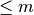 in :math:n variables and having
coefficients in . We indicate with the symbols 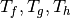, etc. the generic members of such a set. Such a set is an algebra over the field if we introduce
the truncated multiplication as the standard polynomial multiplication truncated at order
of all polynomials of order 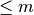 in :math:n variables and having
coefficients in . We indicate with the symbols 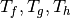, etc. the generic members of such a set. Such a set is an algebra over the field if we introduce
the truncated multiplication as the standard polynomial multiplication truncated at order  .
When needed, we will indicate such a multiplication with the symbol 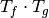.
.
When needed, we will indicate such a multiplication with the symbol 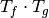.
This algebra is commonly referred to as the algebra of truncated polynomials. A first important
property of this algebra is that, under the multiplication, all polynomials having a zero constant
coefficient are nil-potent of order  , as easily verified. We will indicate the generic
truncated polynomial 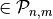 as 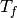 and often we will consider its constant part
separated from the rest, writing 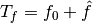.
It is worth noting at this point how such an algebra is unitary and associative.
The first property, in particular, deserves a few more words as it is a property that the
algebra of (non-truncated) polynomials does not possess. Formally
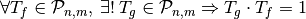.
In practice:
, as easily verified. We will indicate the generic
truncated polynomial 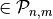 as 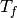 and often we will consider its constant part
separated from the rest, writing 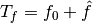.
It is worth noting at this point how such an algebra is unitary and associative.
The first property, in particular, deserves a few more words as it is a property that the
algebra of (non-truncated) polynomials does not possess. Formally
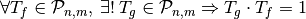.
In practice:
(1)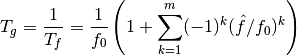
as its easily verified by performing the truncated multiplication 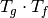 and accounting for the nilpotency of 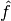.
The link to Taylor expansions¶
We make use of the multi-index notation according to which
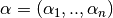 and 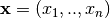
are n-tuples and the Taylor expansion around the point  to order
of a multivariate function
to order
of a multivariate function  of
of  is written as:
is written as:
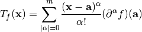
where:
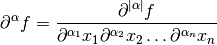
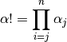
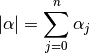
The summation 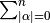 must then be taken over all possible
combinations of 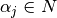 such that .
The expression above, i.e. the Taylor expansion truncated
at order of a generic function , is a polynomial
in the variables .
We now show that if 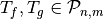 are Taylor expansions
of two functions 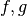 then the Taylor expansion of 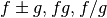
can be found operating on the algebra  , thus computing
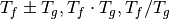. We may thus compute high order
derivatives of multivariate functions computing their Taylor expansions
and then extracting the desired coefficient.
, thus computing
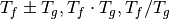. We may thus compute high order
derivatives of multivariate functions computing their Taylor expansions
and then extracting the desired coefficient.
Multiplication¶
We here prove that the product of two truncated Taylor expansions is the
truncated Taylor expansion of the product. We perform the proof for
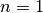 as the notation is there clearer. The multivariate case is
formally identical, requiring a more complex notation. The truncated
Taylor expansion of the product between two functions and  is:
is:
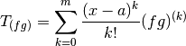
where we indicate with the superscript the  -th derivative with
respect to the independent variable.
We show how the same expression is derived by multiplying the Taylor
expansions of and :
-th derivative with
respect to the independent variable.
We show how the same expression is derived by multiplying the Taylor
expansions of and :
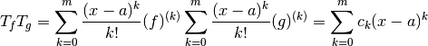
The coefficients 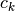 in the last power series are determined as the Cauchy product of the two Taylor series (or discrete convolution) and are:
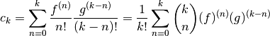
applying now the general Leibniz rule to the last expression we get:
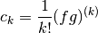
which allows us to conclude:
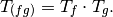
Reciprocal¶
We here prove that the reciprocal of a truncated Taylor expansion,
as defined in the algebra is the Taylor expansion of
the reciprocal. Consider the generic
function and its truncated Taylor expansion .
We denote with 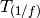 the truncated Taylor expansion of the
reciprocal and apply the multiplication rule to derive that, necessarily,
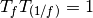. We separate the constant part of from the
rest writing  and we compute the product between
and the definition of reciprocal:
and we compute the product between
and the definition of reciprocal:
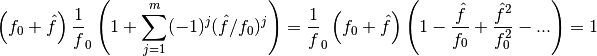
which allows us to conclude:
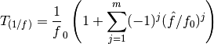
Elementary functions¶
Consider the MacLaurin expansion of a generic function 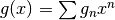.
Consider now a multivariate function 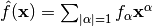 whose MacLaurin Taylor expansion does not have a constant term. The composition between these two functions will then be, trivially,
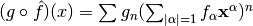.
If we now truncate such an expansion to order , we get
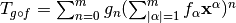,
which can be written as:
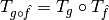
The above equation is called the composition rule and is only valid for functions whose Taylor expansion
does not have a constant term and, is thus nil-potent of order
in . In general, we cannot compute the truncated
Taylor expansion of a composition function directly composing the truncated
Taylor expansions. For most elementary functions, though, we can consider
and use some addition formula to be able to
‘’extract`` and thus exploit its nil-potency. The details
on how this is done differ for each particular considered and are thus
reported in the following subsections.
Exponential¶
Let us consider the case of the exponential:
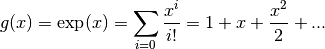
We want to compute the truncated Taylor expansion of f$exp(f(mathbf x))f$ starting from the truncated Taylor expansion f$T_f = f_0 + hat ff$. We thus write:
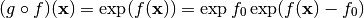
note that, now, we can apply the composition rule to f$exp (f(mathbf x) - f_0)f$ since the MacLaurin Taylor expansion of f$f(mathbf x) - f_0f$ does not have a constant term. Hence:
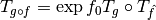
and, finally:
(2)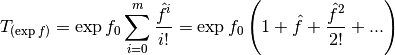
Logarithm¶
Let us consider the case of the natural logarithm:
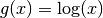
We want to compute the truncated Taylor expansion of f$log(f(mathbf x))f$ starting from the truncated Taylor expansion f$T_f = f_0 + hat ff$. We thus write:
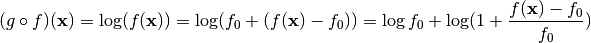
We can now apply the composition rule to get:

and, using the known expression for MacLaurin expansion of f$log(1+x)f$, we get:
(3)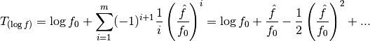
Note that the above expression is only defined if f$f_0 ge 0f$.
Sine and cosine¶
Let us consider the case of the sine and cosine functions:
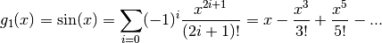
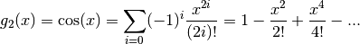
We want to compute the truncated Taylor expansion of f$sin(f(mathbf x))f$, f$cos(f(mathbf x))f$ starting from the truncated Taylor expansion f$T_f = f_0 + hat ff$. We thus write:
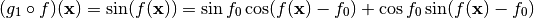
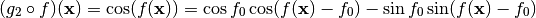
and, applying the composition rule to f$cos(f(mathbf x) - f_0)f$ and f$sin(f(mathbf x) - f_0)f$, we get:
(4)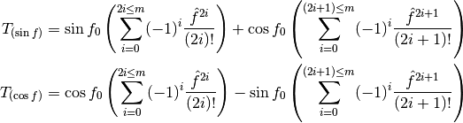
Exponentiation¶
Let us consider the case of the power function.
We want to compute the truncated Taylor expansion of f$f(mathbf x)^alphaf$ assuming to have access to the truncated Taylor expansion of f$ff$, f$T_f = f_0 + hat ff$. We thus write:
We can now apply the composition rule to get:
(5)